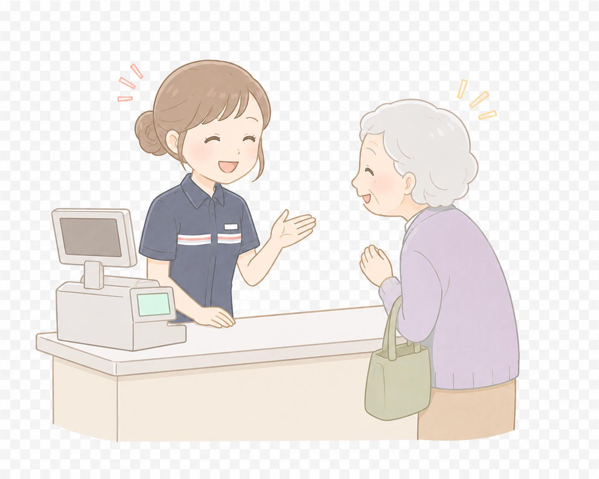
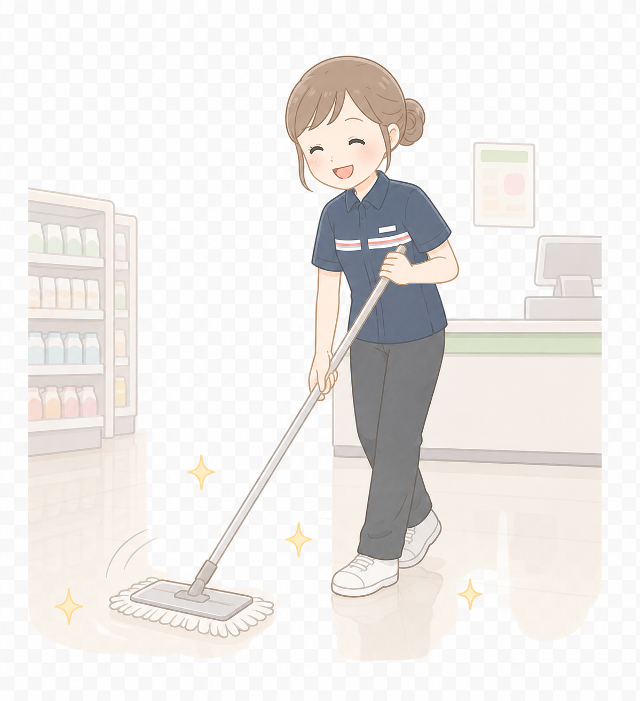
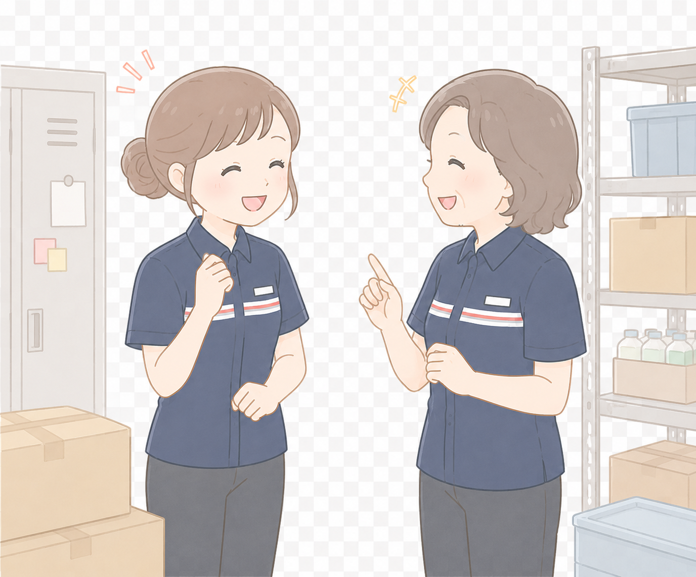
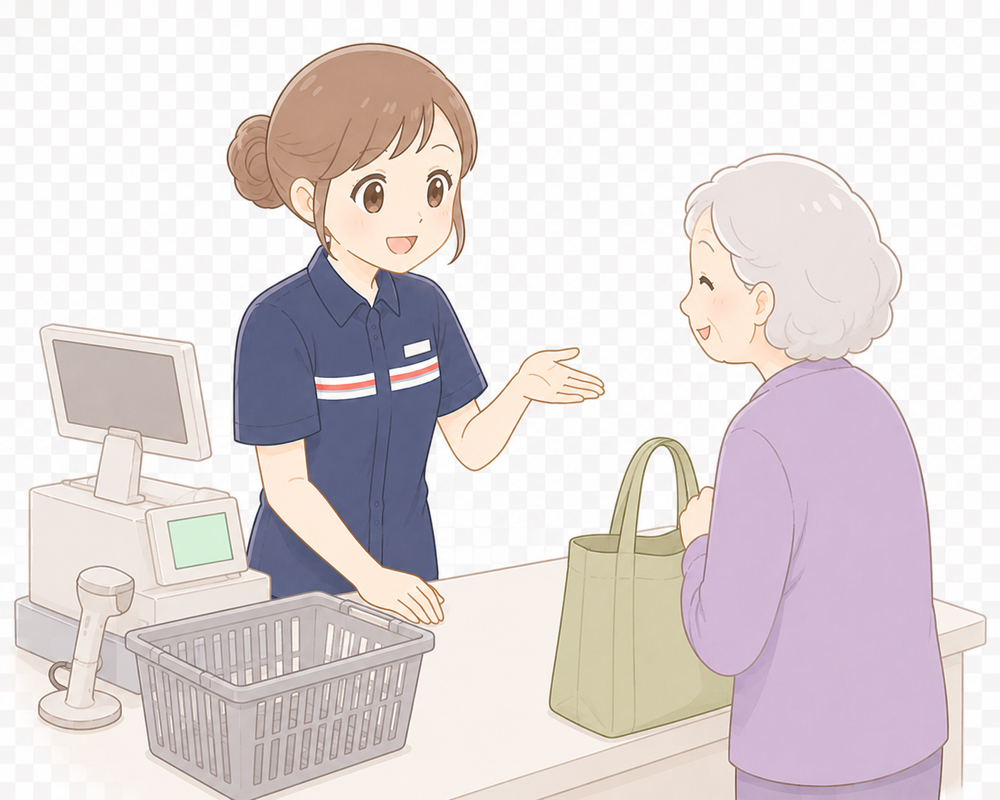
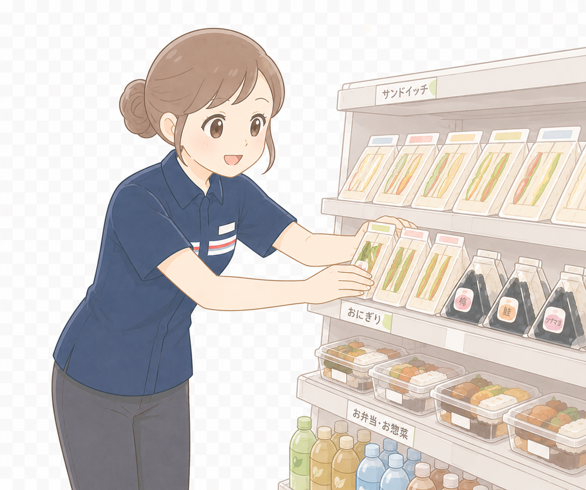

話しかけてくれるお客さんやノリの良い常連さんとは、長くなりすぎない程度に軽く会話をすると接客がグッと楽しく感じられます！「髪の毛切りましたか？」なんてお友達感覚で話せるのも魅力です♪
掃除の時間は比較的1人で集中して作業できる貴重な時間です！接客から少し離れて、黙々と作業することで良い気分転換になります。退勤後の楽しみを妄想しながら掃除するのもオススメです♪
お客さんの来店が少ない時間帯には、同じシフトの人と少しだけお話することができます。性別、年齢、レギュラーか単発かなど、人のバリエーションも豊富です。 「今日はこの人と同じシフトだ！」とテンションが上がる日もあります♪初対面の方と話す機会も多い為、コミュニケーション能力の向上にもつながります！
レジ打ちや袋詰め、レジ横ホットスナックの補充などを「いかに素早く綺麗にできるか」自分の中でタイムアタックゲームにすると、あっという間にシフト時間が過ぎちゃいます！レジ打ちは間違えないように注意してやります！
お客さんが少ない時間、前出し顔出しをしながら新商品や期間限定の商品を見て「あとで買おうかな」と考えるのも楽しみのひとつです。 私は最近商品に書いてあるカロリー表示を見て買うか買わないかの葛藤を脳内でしています♪





コンビニで一番びっくりする丸い食べ物は？